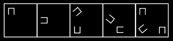
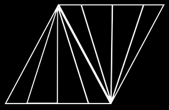
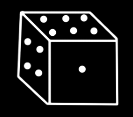
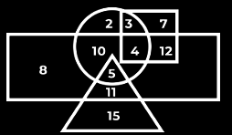

Which of the following numbers will replace the question mark (?) in the given series.
32 , 32, 32, 34, ?, 106, 530
Ans - C
:Select the odd number/ letter/ word from the given alternatives.
Ans - C
Select the figure that will come next in the following figure series.

Ans - C
In a certain code language, ‘COUNTRY’ is written as ‘BOWKXLF’. How will ‘DESPAIR’ be written in that Language?
Ans - C
One morning, Chitrashi and Ayaan sit facing each other. If the shadow of Ayaan falls to the left of Chitrashi, then in which direction is Ayaan facing?
Ans - C
How many triangles are there in the given figure?

Ans - A
• Six personsA,B,C,D,E and Fare sitting in two rows,(facing each other) three persons are sitting in each row
• E is not at end of any row.
• D is second to the left of F.
• C, the neighbor of E, is sitting diagonally opposite to D.
• B is the neighbor of F.
• Question 7 : Based on the given information who is sitting opposite to B ?
Ans - C
Select the correct water image of the given figure.

Ans - D
An enterprising businessman earns an income of Rs 1 on the first day of his business. On every subsequent day, he earns an income which is just double of that made on the previous day. On the 10th day of business, his income is?
Ans - B
Directions (10-11): Answer the questions based on the information given below:
Six persons Amanat, Badshah, Chirag, Damodar, Elvi & Farooq have different weights. Badshah is heavier than only two people. Elvi is lighter than Chirag but not than Farooq. Neither Farooq nor Amanat is the lightest. Amanat is not heavier than Elvi
Q1. Who among the following is 2nd lightest
Ans - E
In the Venn diagram given below, the 'Circle' represents 'Officers', the 'Triangle' represents 'Married', the 'Rectangle' represents 'Salary above Rs.50,000'and the 'Square' represents 'Post-Graduates'. The numbers given in the diagram represents number of persons of that particular category. How many single officers have salary above Rs.50,000 but do NOT have a post-graduate degree?

Ans - C
Select the option that is related to the third term in the same way as the second term is related to the first term.
DOGMATIC : EQHOBVJD :: PRODUCTS: ?
Ans - A
Statements: Some Cats are Rats. All bats are tables. All Rats are Bats
Conclusion:
I. Some Cats are bats
II. All bats are rats
III. All tables are cats
IV. All bats are cats
Ans - D
Statements:
Most CPUs are keyboards.
No keyboard is a Mouse.
All Mouses are CPU.
Conclusion
I. Some keyboards are CPU
II. All CPU’s are Mouse
III. No Mouse is a keyboard
IV. Some Mouse are keyboard
Ans - C
Statement- Drinking in moderation can help our health, some research has showed. Many doctors recommend a glass of wine or beer a night as part of diet plans such as the Mediterranean diet and the DASH diet, which have been proven to keep your heart and brain healthy. However, a new study suggests that even moderate drinking may not be great for your brain. Which of the following can be deduced from the above statement?
(i) Scientific researches can contradict at times.
(ii) Moderate intake of wine is less harmful than cigarette.
(iii) Something which is not good for brain does not mean it cannot be healthy.
Ans - A